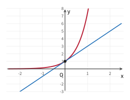
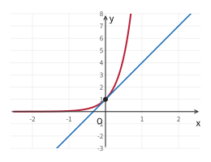
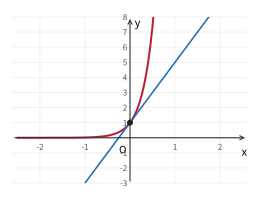

別冊練習問題 9 の解答 e^{ax} ≥ 1+ax の証明
(1) すべての実数 \(x\) について \(e^{2x}\geqq1+2x\) が成り立つことを証明せよ。
差の関数をつくる
\(f(x)=e^{2x}-(1+2x)\) とおき、\(f(x)\geqq0\) を示す。
導関数を求める
\((e^{2x})'=2e^{2x}\)。
\[f'(x)=2e^{2x}-2=2(e^{2x}-1)\]\(f'(x)=0\) を解く
\(e^{2x}=1=e^0\) より \(2x=0\)、つまり \(x=0\)。
増減表をかく
\(e^{t}\) は \(t\) とともに増えるので、\(x<0\) では \(e^{2x}<1\)、\(x>0\) では \(e^{2x}>1\)。
| \(x\) | \(\cdots\) | \(0\) | \(\cdots\) |
|---|---|---|---|
| \(f'(x)\) | \(-\) | \(0\) | \(+\) |
| \(f(x)\) | ↘ | \(0\)（最小） | ↗ |

最小値を求める
\[f(0)=e^0-1=1-1=0\]
最小値が \(0\) なので、すべての \(x\) で \(f(x)\geqq0\)。等号は \(x=0\) のとき。
【答案】
\[\text{証明終}\]答
(2) すべての実数 \(x\) について \(e^{3x}\geqq1+3x\) が成り立つことを証明せよ。
差の関数をつくる
\(f(x)=e^{3x}-(1+3x)\) とおき、\(f(x)\geqq0\) を示す。
導関数を求める
\((e^{3x})'=3e^{3x}\)。
\[f'(x)=3e^{3x}-3=3(e^{3x}-1)\]\(f'(x)=0\) を解く
\(e^{3x}=1=e^0\) より \(3x=0\)、つまり \(x=0\)。
増減表をかく
\(e^{t}\) は \(t\) とともに増えるので、\(x<0\) では \(e^{3x}<1\)、\(x>0\) では \(e^{3x}>1\)。
| \(x\) | \(\cdots\) | \(0\) | \(\cdots\) |
|---|---|---|---|
| \(f'(x)\) | \(-\) | \(0\) | \(+\) |
| \(f(x)\) | ↘ | \(0\)（最小） | ↗ |

最小値を求める
\[f(0)=e^0-1=1-1=0\]
最小値が \(0\) なので、すべての \(x\) で \(f(x)\geqq0\)。等号は \(x=0\) のとき。
【答案】
\[\text{証明終}\]答
(3) すべての実数 \(x\) について \(e^{4x}\geqq1+4x\) が成り立つことを証明せよ。
差の関数をつくる
\(f(x)=e^{4x}-(1+4x)\) とおき、\(f(x)\geqq0\) を示す。
導関数を求める
\((e^{4x})'=4e^{4x}\)。
\[f'(x)=4e^{4x}-4=4(e^{4x}-1)\]\(f'(x)=0\) を解く
\(e^{4x}=1=e^0\) より \(4x=0\)、つまり \(x=0\)。
増減表をかく
\(e^{t}\) は \(t\) とともに増えるので、\(x<0\) では \(e^{4x}<1\)、\(x>0\) では \(e^{4x}>1\)。
| \(x\) | \(\cdots\) | \(0\) | \(\cdots\) |
|---|---|---|---|
| \(f'(x)\) | \(-\) | \(0\) | \(+\) |
| \(f(x)\) | ↘ | \(0\)（最小） | ↗ |

最小値を求める
\[f(0)=e^0-1=1-1=0\]
最小値が \(0\) なので、すべての \(x\) で \(f(x)\geqq0\)。等号は \(x=0\) のとき。
【答案】
\[\text{証明終}\]答